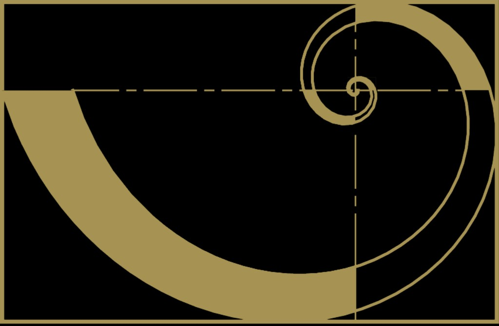

Genera el espectro elástico de aceleraciones de diseño y el espectro elástico de desplazamientos (m) de diseño según el numeral A.2.6, a partir de Aa, Av (Apéndice A-4), Fa/Fv (tablas A.2.4-3 y A.2.4-4), coeficiente de importancia I (A.2.5) y, cuando aplique, Espectro de Microzonificación Sísmica local. Opcionalmente reduce por R y superpone espectros del evento SGC2026pqqmro (terremoto de 10 de agosto de 2026).
Cargando datos…
El CSV exportado tiene en la primera columna el periodo T_s y en las
columnas siguientes las ordenadas elásticas mostradas (Sa en g, Sd en m).